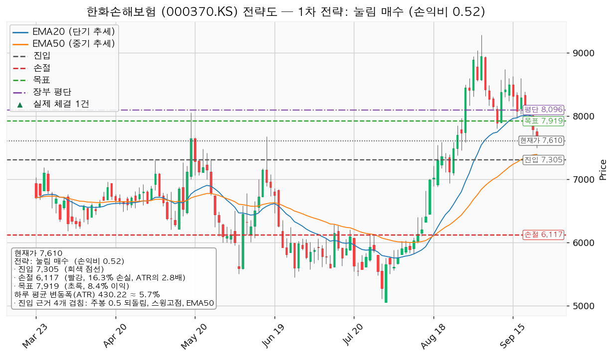
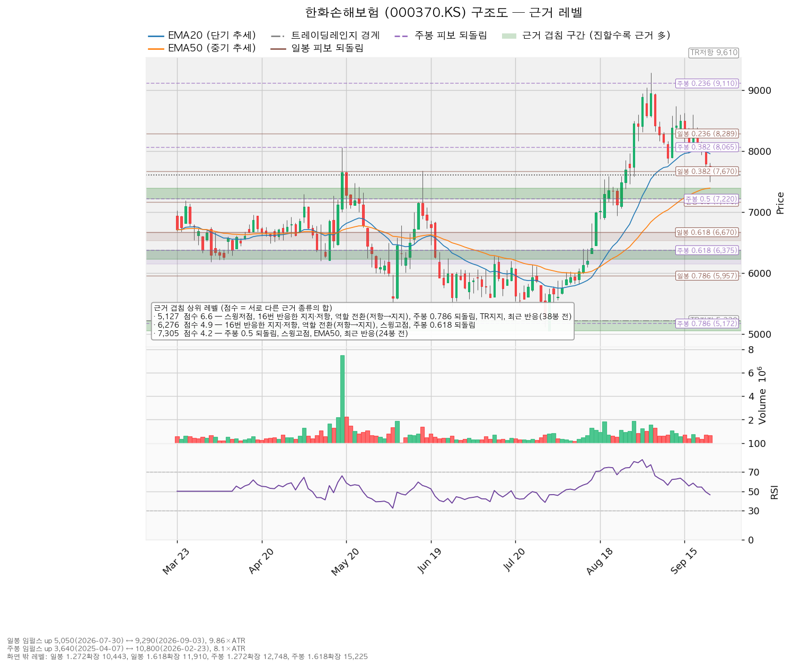
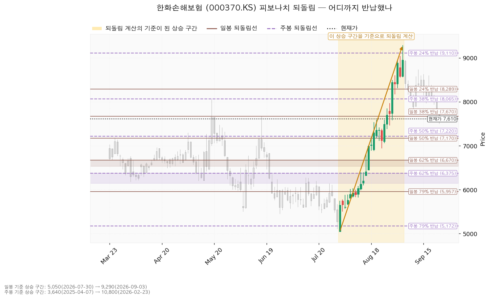
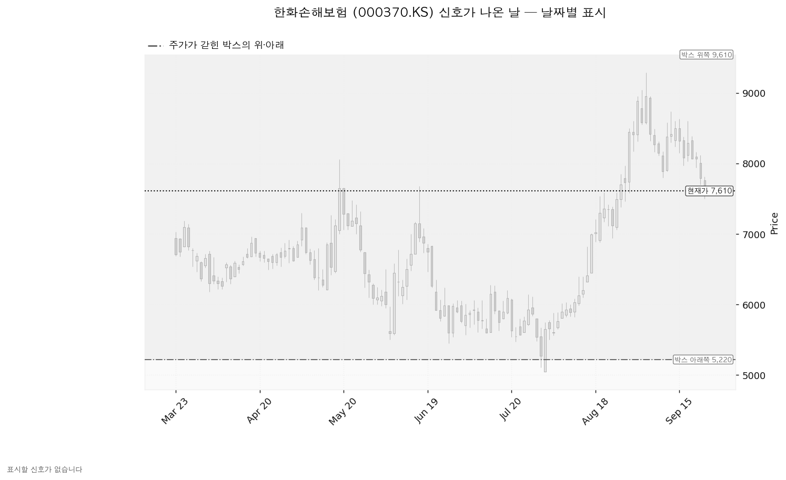

한화손해보험 (000370.KS)은 장기보험·자동차보험·일반보험을 파는 국내 손해보험사입니다.
코스피 7,067이 200일 이동평균 6,237 위(+13.30%)라 신규 진입이 가능한 국면입니다. 현재가는 7,610원, 하루 평균 변동폭(ATR)은 430원(주가의 5.65%)입니다.
| 구분 | 가격 | 판정 방식 | 현재가 대비 | 뜻 |
|---|---|---|---|---|
| 회복선 | 7,617원 | 일봉 종가 회복 (회복 대기) | +0.09% | 패스 결론이므로 사는 선이 아니라 다시 분석하는 값입니다 |
| 집행 손절 | 6,117원 | 장중 저가 터치 | -19.61% | 보유 50주에 적용됩니다. 신규 진입을 하지 않으므로 추가분에는 해당이 없습니다 |
| 관망 종료 기준 | 6,874원 | 일봉 종가 이탈 | -9.67% | 매수 계획 종료 · 새 리포트 대기 · 보유 50주 유지 |
| 확인선 | 7,919원 | 일봉 종가 돌파 (미돌파) | +4.06% | 대표 셋업의 목표와 같은 가격입니다. 막히면 청산, 종가로 넘으면 새 셋업입니다 |
| 폐기선 | 5,220원 | 이탈 후 3거래일 내 회복 실패 + 반등에서 저항 확인 (유지 중) | -31.41% (5.56 ATR) | 보유분 정리. 거리가 멀어 실무상 작동하지 않습니다 |
| 항목 | 값 |
|---|---|
| 셋업 | 되돌림 매수 · 구조 증명도는 선취형(구조 미확인) |
| 진입 / 손절 / 목표 | 7,305원 / 6,117원 / 7,919원 |
| 손익비 | 1:0.52 (손절 폭 2.76 ATR) |
| 엣지 | 평균회귀 — 지지로 눌릴 때 산다. 승률이 높고 이익 폭이 작은 유형이며 저항에서 전량 청산이 정합적입니다 |
| 진입 근거 겹침 | 4.2점 — 주봉 0.5 되돌림 · 스윙고점 · EMA50 · 최근 반응(24봉 전), 구간 7,220~7,394원 |
| 목표 근거 겹침 | 3.3점 — 스윙저점 · EMA20 · 라운드피겨 · 최근 반응(10봉 전), 구간 7,800~8,000원 |
| 손절 근거 | 겹침 구간(6,225~6,375원, 4.9점) 바로 아래에 두었습니다 |
대표로 고른 이유는 손익비 0.52 × 구조 증명도(선취형) × 근거 겹침 4.2점이며, 상대강도·거래량이 순위에 0.968배를 곱했습니다(지수 대비 20일 초과수익 -3.20%, 상대강도선 20일 기울기 -3.05%, 되돌림 구간 거래량 0.68배로 마름). 이 배수는 순서만 바꾸며 대표 셋업을 바꾸지는 않았습니다.
손절을 겹침 구간 안이 아니라 그 아래에 둔 결과 손절 폭이 2.76 ATR로 벌어졌고, 손익비 0.52는 그 대가입니다. 손절을 조여 만든 숫자가 아니라 구조 그대로의 숫자입니다. 진입 7,305원에서 목표 7,919원까지는 1.43 ATR이라 2 ATR에 못 미치므로 트레일링·다단 청산을 권하지 않습니다(2배는 관행적 기준이지 정설이 아닙니다). 엔진은 7,617원 50% · 7,919원 50% 분할과 본전 스탑(7,305원)을 함께 냈고 전 구간 손익비 1:0.39, T1 체결 후 하한은 1:0.13입니다 — 집행 정책은 목표 전량 청산이므로 이 분할은 참고 수치입니다.
계획 진입가 7,305원은 보유 평단 8,096원보다 -9.78% 아래라 평단을 낮추는 매수에 해당하지만, 손익비가 1 미만이므로 집행하지 않습니다.
나머지 한 셋업인 돌파 매수(구조 증명도는 돌파 확인형)는 진입 7,919원 / 손절 7,392원 / 목표 8,062원, 손익비 1:0.27(손절 폭 1.22 ATR)이라 보류입니다. 진입 근거는 3.3점 겹침(스윙저점 · EMA20 · 라운드피겨 · 최근 반응 10봉 전)이고 중간 목표가 없어 분할 없이 단일 목표 전량 청산이며, 손절은 겹침 구간(7,500~7,680원) 바로 아래입니다. 진입 근거는 모멘텀인데 목표가 8,062원으로 고정돼 있어, 돌파 이후 구간은 이 포지션의 연장이 아니라 새 셋업으로 다시 잡습니다.
지수 대비 초과수익은 20일 -3.20%, 60일 +51.88%, 120일 -20.15%이고 가중치(20일 0.45 · 60일 0.30 · 120일 0.25)를 적용한 값은 +9.08%입니다. 60일 강세는 9월 3일 고점까지의 상승분이며 최근 20일은 지수에 뒤집니다.

| 단계 | 조건 | 뜻과 행동 |
|---|---|---|
| 관찰 | 일봉 종가가 7,305원 아래로 마감 | 구조 이탈의 시작입니다. 되돌아 올라오면 속임수 하락일 수 있어 아직 무효가 아닙니다. 신규 진입만 중단하고 집행 손절은 그대로 둡니다 |
| 경고 | 이탈 후 3거래일 안에 7,305원을 종가로 회복하지 못함, 또는 그 전에 일봉 종가가 6,874원 아래로 마감 — 둘 중 먼저 오는 쪽 | 되돌림 지지를 잃을 가능성이 우세해집니다. 잔여 비중을 줄이고 반등에서의 반응을 확인합니다 |
| 무효 | 반등이 7,305원에서 막히고 그 아래로 되밀림 | 구조 해석이 틀린 것으로 확정됩니다. 포지션을 정리하고 새 구조가 만들어질 때까지 관망합니다 |
집행 손절 6,117원은 이 3단계와 무관하게 별도로 작동합니다. 장중에 잠깐 가격을 내준 것은 어느 단계에도 해당하지 않습니다.
폐기선 5,220원은 현재가에서 5.56 ATR 떨어져 있어 실무상 무효화 기준으로 쓸 수 없습니다. 논지 무효화는 따로 겁니다 — 2027년 컨센서스 주당순이익이 지금 3,301원까지 올라온 상향(90일 +16.4%, 30일 +7.2%)이 다음 발표에서 하향으로 돌아서면, 이번 하락을 배수 수축으로 본 해석이 무너집니다. 그 발표일은 아래 확인 캘린더에 적은 대로 조회되지 않았습니다.
상승 전환 — 7,617원을 종가로 회복한 뒤 그 위에서 지지되고, 7,919원을 종가로 넘기는 경로입니다. 이 경우는 이번 리포트의 계획이 살아나는 것이 아니라 새 셋업으로 다시 잡습니다.
횡보 지속 — 5,220원을 지키면서 7,919원 아래 박스가 이어지는 경로입니다. 매물 소화에 시간이 필요한 국면이며 부정적 신호가 아닙니다. 추적 항목은 셋입니다: 지지 테스트마다 매도 거래량이 줄어드는지(현재 감소), 저점이 절상되는지(현재 절하), 상승할 때 거래량이 실리는지(현재 상승봉이 하락봉의 1.53배).
시나리오 폐기 — 5,220원 이탈 후 3거래일 안에 회복하지 못하거나 그 전에 4,790원 아래로 종가 마감하고, 반등에서 5,220원이 저항으로 확인되는 경로입니다. 매집이 아니라 재분산이었다는 뜻이며 추가 저점 갱신 가능성이 열립니다. 보유분을 정리하고 새 레인지가 만들어질 때까지 관망합니다.
| 가격대 | 겹침 점수 | 근거 |
|---|---|---|
| 7,800~8,000원 | 3.3 | 스윙저점 · EMA20 · 라운드피겨 · 최근 반응(10봉 전) |
| 7,500~7,680원 | 3.3 | 라운드피겨 · 일봉 0.382 되돌림 · 스윙고점 · 최근 반응(10봉 전) |
| 7,220~7,394원 | 4.2 | 주봉 0.5 되돌림 · 스윙고점 · EMA50 · 최근 반응(24봉 전) |
| 6,225~6,375원 | 4.9 | 16번 반응한 가격 · 역할 전환(저항→지지) · 스윙고점 · 주봉 0.618 되돌림 |
| 5,050~5,220원 | 6.6 | 스윙저점 · 16번 반응한 가격 · 역할 전환(저항→지지) · 주봉 0.786 되돌림 · 박스 하단 · 최근 반응(38봉 전) |
박스는 727봉 중 최근 180봉(약 9개월)을 본 것이며, 5,220~9,610원이 유효 구간입니다. 40봉 창은 가격이 벗어나 성립하지 않았고 90봉·180봉이 성립했습니다. 박스 안쪽 판정은 중립입니다 — 지지 테스트마다 매도 거래량이 줄었고 상승봉 거래량이 하락봉의 1.53배지만, 박스 안 저점이 절상이 아니라 절하입니다. 가격은 직전 구간(3,833~7,107원)과 겹치는 자리에서 올라와 같은 횡보의 연장으로 해석됩니다. 매집과 재분산은 같은 사각형을 그리므로 판단 근거는 이 안쪽 수치입니다.

되돌림 계산의 기준이 된 상승 구간은 7월 30일 5,050원에서 9월 3일 9,290원까지입니다. 현재가 7,610원은 그 상승분의 38.2%(7,670원)를 조금 더 반납한 자리이며, 50% 되돌림은 7,170원, 61.8%는 6,670원입니다. 주봉 기준으로는 2025년 4월 3,640원에서 2026년 2월 10,800원까지의 상승에 대해 50% 되돌림이 7,220원이라 일봉·주봉 되돌림선이 7,170~7,220원에서 겹칩니다.

박스 안에서 속임수 하락·속임수 상승·강세 신호·약세 신호로 잡힌 날은 없습니다. 국면 후보는 상승 추세 국면이며 근거는 상승 추세와 이동평균 정배열입니다. 신호일이 없어 아래 차트에 색으로 남은 캔들도 없습니다.

후행·선행 주가수익배수는 조회되지 않았습니다. 대신 추정 주당순이익으로 봅니다 — 2026년 2,846원(+25.94%), 2027년 3,301원(+15.98%)이며 현재가 기준 배수는 각각 2.67배·2.31배입니다. 목표주가는 애널리스트 5명 평균 8,620원, 최저 8,000원, 최고 9,500원이고 현재가 7,610원은 5명 전원의 목표 중 가장 낮은 8,000원보다도 아래입니다.
9월 3일 9,290원에서 -18.08% 내려온 이번 하락은 배수 수축입니다. 2027년 추정치는 90일간 +16.4%, 최근 30일에도 +7.2% 올라 상향이 진행 중입니다(2026년 추정치는 90일 +6.4%, 최근 30일 -0.5%로 멈춰 있습니다). 추정치가 오르는 동안 가격이 내렸으므로 사업 악화로 적지 않습니다. 현금흐름은 2024-12-31 결산 기준 영업현금흐름 +1조 4,924억원, 잉여현금흐름 +1조 4,692억원으로 적자가 아니며 설비투자는 232억원으로 +155.8% 늘었지만 규모가 작습니다.
평균 목표 8,620원은 2026년 추정 이익 기준 3.03배로, 현재 2.67배에서 배수가 늘어나야 닿는 값입니다(+13.3%의 상승분이 전부 배수 확장입니다). 2027년 추정 이익으로 보면 같은 8,620원이 2.61배여서 현재 배수보다 낮아지므로, 이익이 예정대로 늘면 배수 확장 없이도 닿습니다. 컨센서스의 시계는 12개월이고 이 셋업의 시계는 수 주라 결론이 갈려도 모순은 아닙니다.
다음 실적 발표일이 조회되지 않았습니다. 날짜가 붙은 확인 이벤트를 이번 리포트에는 넣지 못했고, 그래서 대기의 끝을 날짜로 잡을 수 없습니다. 다음 실적 이후 구간의 역풍도 확인할 자료가 없습니다. 날짜 대신 볼 것은 2027년 컨센서스 주당순이익 3,301원의 상향이 이어지는지이며, 이 값은 다음 리포트에서 다시 인용합니다. 현금흐름 수치는 2024-12-31 결산 기준이라 최근 분기를 반영하지 않습니다.
보유는 50주, 평단 8,096원이며 현재 평가액 380,500원(계좌 139,498,400원의 0.27%), 평가손익 -24,300원(-6.00%)입니다. 집행 손절 6,117원까지 열려 있는 손실은 74,628원으로 계좌의 0.05%입니다. 엔진이 낸 신규 진입 비중은 계좌의 6.2%(8,648,901원)로 한 종목 상한 13% 안이지만, 손익비가 1 미만이라 집행하지 않습니다.
도구 적합성은 문제없습니다 — ATR이 주가의 5.65%로 8% 아래이고 손절 폭은 2.76 ATR이라, 논지와 무관한 하루치 흔들림으로 손절이 체결될 자리가 아닙니다. 막는 것은 거리입니다: 손절까지 2.76 ATR을 내주면서 목표까지는 1.43 ATR뿐입니다.
최종 판정은 패스입니다. 손익비 1:0.52이고, 조건 점검 9개 중 4개 통과에 미달은 20일선 위 · 52주 고점 대비 · 지수 대비 20일 초과수익 · 상대강도선 신고가 · 손익비입니다. 보유 50주는 유지하고 집행 손절 6,117원만 걸어 둡니다.
후행·선행 주가수익배수와 다음 실적 발표일이 조회되지 않았습니다. 현금흐름은 2024-12-31 결산 기준입니다. 박스 안에서 잡힌 신호일이 없어 신호일 집중도 차트에는 색으로 남은 캔들이 없습니다.
ATR(Average True Range) = 하루 평균 변동폭. EMA20·EMA50 = 최근 20일·50일에 가중치를 더 준 이동평균. RSI = 가격 상승분과 하락분의 비율로 과열·침체를 재는 지표. 되돌림선(피보나치) = 직전 상승분을 몇 % 반납했는지 표시한 가격. 상대강도선 = 종목 가격을 기준 지수로 나눈 선.